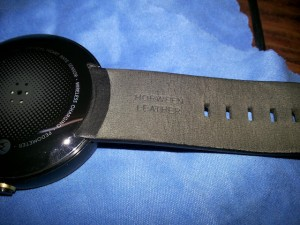

Moto 360 1st Gen
TL;DR: TI OMAP3? Not Good.
TL;DR: TI OMAP3? Not Good.
So, a couple of days back I got my Moto 360 and immediately fell in love with it. Well, most of it.
Motorola used a round box with a white top and a black or grey (depending on the color of your watch) bottom. The watch came cradled in a nice foam piece to protect the shape of the strap and covers on both the front and the back of the watch.
The Moto 360 has a stainless steel body and the base model comes with a Horween Leather strap. The black watch that I got had a black strap, whereas you’ll find a stone grey strap on the silver version. Personally, I prefer the black look.
There’s a power button on the side that doubles as a screen on/off toggle AND, long pressing it takes you the settings screen (on Android 4.4W) and to the app launcher on Android 5.1.1
The screen, although a perfect circle has the infamous “flat-tyre” design. In effect, a small lower part of the screen isn’t used as display but instead houses stuff like ambient light sensors and circuitry required to run the display.Although it may look like a poor design choice at first (it did to me), but in reality, this is required for the edge to edge display of the rest of the screen, which is gorgeous.
The watch is also IP 67 rated which basically means that it’s dust and water resistant.
(For more details about IP ratings, refer to LinusTechTips’ video on the topic.)
The Moto 360 sports a 1.56 inch circular display with a screen resolution of 320×290, that’s 205 ppi, which is definitely on the lower side as compared to other smartwatches.
All in all, though, 205 ppi isn’t as bad as it might sound. I, personally don’t mind it at all. It’s okay for me. But if you prefer higher density displays on everything you own, then you might want to consider another watch.
The Moto 360 has a relatively smaller battery at 320 mAh and hence it requires daily charging if you’re a heavy user. On light to moderate use, the watch can push around a day and a half.
If there’s a positive to the small 320 mAh battery, it’s that it charges really quickly. In fact you can almost juice it up 50% in around 30 minutes. This is good news, considering that the watch only lasts about 24 hours on a single charge.
I’m not a heavy user. The amount of notifications I get are light and my use of the watch is moderate, for the most part, and I can push the watch to last me around 2 days, provided I turn it off at night.
The poor battery life can also be attributed to the almost 3-4 year old TI OMAP processor that Motorola has used in the watch. The watch might have gotten a lot more out of the battery if Motorola had used a newer, more efficient processor.
If there’s one thing about the Moto 360 that I absolutely love, it’s the charging. Motorola provided a wireless charging dock, that looks elegant and has a matte finish.
When you need to charge the watch, just place it on the dock and it starts charging; the watch also shows the time along with the charge percentage as it charges meaning you can place it on your table and see the time while it charges without having to tap the screen to wake it up. Desk clock, yeah!
The watch pairs with your phone using Bluetooth (and with the Android wear update, you can use WiFi, too) to push notifications on your wrist that can be swiped away, or replied to using voice or one of the included standard text options. There’s also an option for drawing emojis or selecting emojis from a list.
Voice recognition works very well, although if you speak too unclearly, you might require a couple extra tries to get the watch to accurately recognise your speech.
There are a lot of great apps for Android Wear already. Some of the apps that I use (not including the ones already included in the watch by Motorola and/or Google) are :
Motorola also includes a host of fitness tracking apps including a Step counter that uses the pedometer in the watch, a heart rate app for tracking your heart activity.
You can also use navigation on the watch itself, provided you have the latest version of Google Maps on your phone when you first add your watch to the Android Wear app.
I noticed that if you have an older version of Google Maps that didn’t support Android Wear when you first paired your watch with your phone, you will not be able to use navigation on your phone even if you update Maps later. You’ll have to go to the Android Wear app and resync apps to the watch for Maps to show up as an app on the watch and to use navigation on the watch.
At 13,999 Rs, the Moto 360 is an amazing watch. If you don’t mind charging your watch everyday and 205 ppi doesn’t translate to “deal-breaker” for you, then this is one of the best watches you can get. Obviously, it all boils down to personal preference in the end.